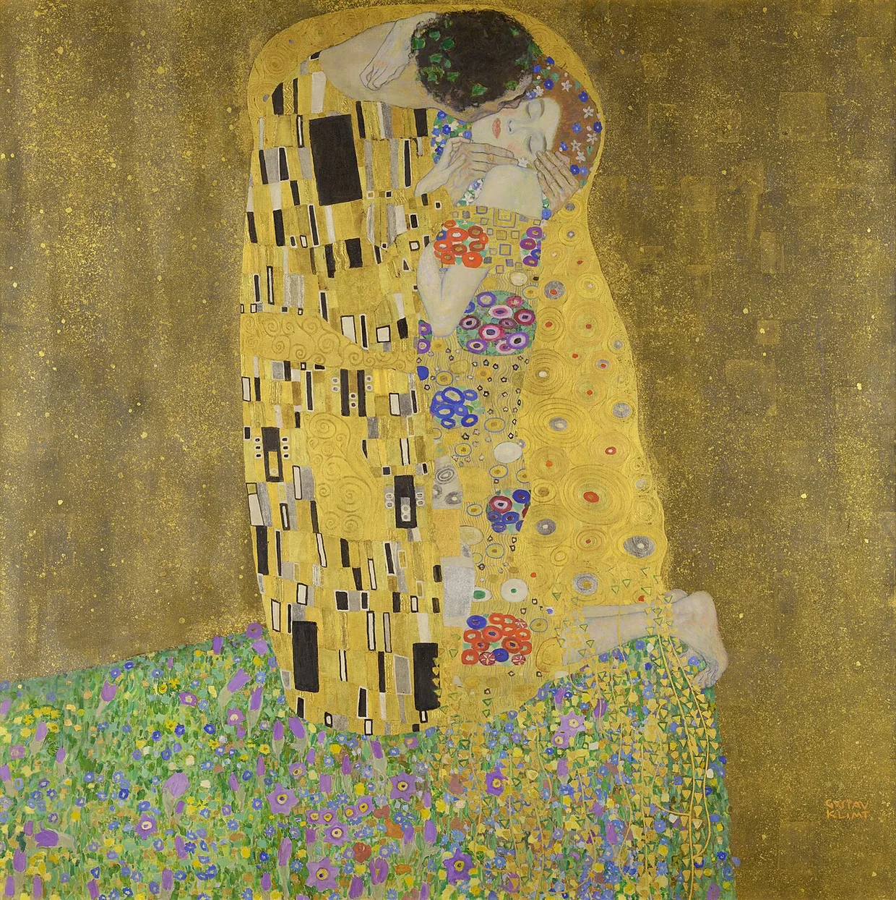
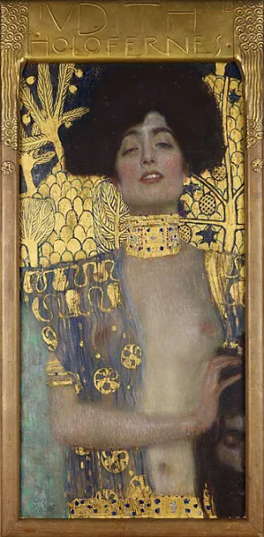
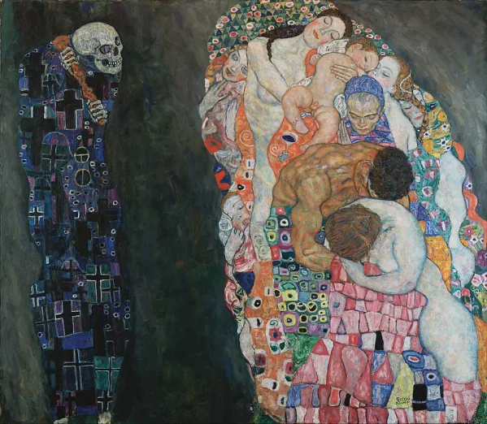

«Поцелуй» 1908
Апофеоз «Золотой фазы», где любовь превращена в вечный ритуал.
Это не просто картина, это икона любви, лишенная земного времени и пространства. Картина восхищает гениальной кодировкой гендера через орнамент. Фигура мужчины покрыта жесткими, геометрическими черно‑белыми прямоугольниками — символ разума и мужской энергии. Фигура женщины соткана из мягких, плавных разноцветных кругов и флоральных мотивов — символ плодородия и чувственности. Климт использует настоящее сусальное золото, чтобы полностью уничтожить иллюзию глубины. Влюбленные стоят не на земле, а на краю золотой бездны, усыпанной цветами. Золото здесь лишает фигуры телесности, превращая их в плоский, сияющий рельеф. Они замурованы в золоте навсегда, их поцелуй стал абсолютным, не подлежащим разрушению символом.
Композиционно изображение построено как интимная сцена, почти камерная, лишённая перспективы; орнамент и золото создают ощущение священного пантеона. Контраст между абстрактными узорами и мягкостью человеческих форм делает картину одновременно холодной и чрезвычайно чувственной.

«Юдифь I» 1901
Рождение образа роковой женщины (femme fatale) и триумф эротического декаданса.
Библейская Юдифь, отрубившая голову Олоферну, традиционно изображалась как героиня, совершившая подвиг ради спасения народа. Климт переворачивает миф: его Юдифь — это хищная, сексуально возбужденная убийца. Сила этой картины — в провокационном кадрировании. Климт обрезает картину так, что голова Олоферна видна лишь частично, в самом низу, словно трофей, зажатый в руках. Лицо Юдифи выражает не праведный гнев, а томное, полузакрытые глаза и приоткрытые губы выдают высшую точку садистского экстаза.
Золотой фон здесь давит, создавая атмосферу клаустрофобии, а тяжелый взгляд модели с полуприкрытыми веками буквально гипнотизирует зрителя, превращая его в следующую жертву. Климт мастерски сочетает эротизм и насилие, заставляя зрителя испытывать одновременно восхищение и отторжение.

«Смерть и жизнь» 1910–1915
Философский поединок, где цвет становится аргументом в споре с небытием.
В отличие от золотых портретов, здесь Климт выступает как мощный экспрессионист. Композиция делится на две части жесткой, безжалостной границей: слева — одинокая фигура Смерти, похожая на мумию, покрытую мрачными синими, черными и фиолетовыми крестами и черепами; справа — гигантская, сплетенная воедино масса человеческой жизни: младенцы, мать, юная девушка, старуха. Невозможно не подчеркнуть здесь потрясающую работу с колористикой. Смерть написана холодными, иссушающими тонами. Жизнь, напротив, пульсирует теплыми, насыщенными красными, желтыми и изумрудными узорами, похожими на мозаику.
Человечество выглядит как единый, спящий организм, безмятежно плывущий по реке времени, не замечая надвигающейся тени. Климт показывает, что Смерть не злодей — она лишь безучастный наблюдатель, а Жизнь — это яркая, но хрупкая вспышка цвета перед лицом вечной тьмы.